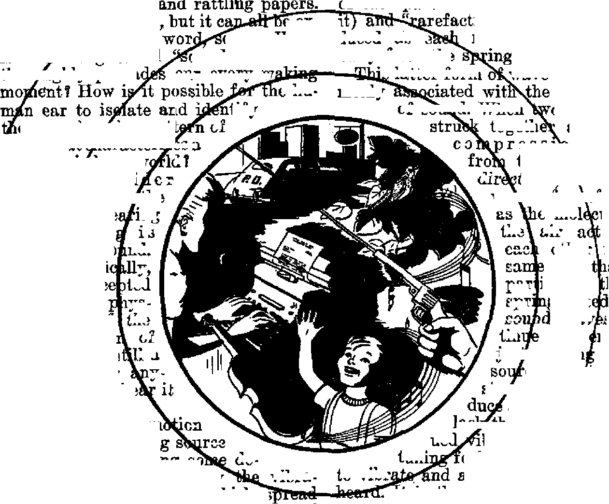
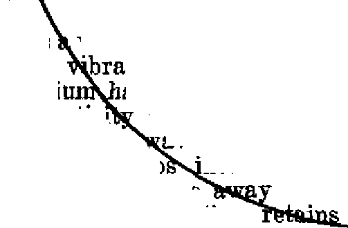
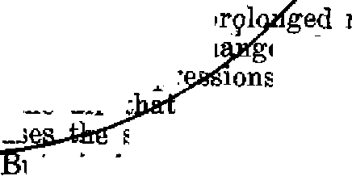

Germany Under Russian Rule
A u;ii ud the .1 <u/.-si;i = j o-1 n:utters
'‘\crs EicdurH \outi* clear ul J-,_hnL-uency?
t-s tuv ar J s: i ..x'r-ch i ’; j I 'i analvzed
THE MISSION OF THIS JOURNAL
Nev-i sources that are able to keep you awake to the vital issues of our times must be unfettered by censorship and aelfish inter eats. •‘AwakeF* has no fetters. It recognizes facts, faces facts, is free to publish facts. It is not bound by poEticai ambitions or obligations; It is unhampered by advertisers whose toes must not be trodden on; it is unprejudiced by traditional creeds. This journal keeps itself free that it may speak freely to you. But it does not abuse ita freedom. It maintains integrity to truth.
“Awake !J' uses the regular news channels, but is not dependent on them* Its own correspondents are on all continents, in scores of nations. From the four comers of ilia earth their uncensored^ on*the-scenes reports come to you through these columns. This journal’s viewpoint is not narrow, but is international, It is read in many nations, in many languages, by persons of all ages. Through its pages many fields of knowledge pass in review—government, commerce, religion, history, geography, science, social conditions, natural wonders—why* its coverage is as broad as the earth and as high as the heavens.
•‘Awake I” pledges itself to righteous principles, to exposing hidden fees and subtle dangers, to championing freeoom for all, to comforting mourners and strengthening those disheartened by the failures of a delinquent world, reflecting sure hope for the establishment cf a right' eous New World,
Get acquainted with *'Awake!” Keep awake by reading “Awake!”
PmillSlISD 8**1 NON TH LT 2T
WATCHTOWER BWLE AND TRACT SOCIKTT, INC,
117 Adams Street Brooklyn I, N. Y., II S. A.
n. KjtoMI, /’rt’Jirfpfl# Gbasi S^iteu, Seoreiurff
Flvt cents b cflPX Arn'cr j
Rj*ltt«uai itaiJd b« *it » Id w cckih-Itt tn wttU rtedwotj u entrants
te^rtry vf sewf. Btul’.Laacti in accepts it fna reuntrki whr* no cCcc U
ti, foLffMUoftd ttt>Ticr jritr tcJr S-UerluUrx: ia diSennt ctfwt'fe bj® tuiri Lt. Ncaj •rFMicr.
NUIm tf avfrittoi (nith ttmwiI bin*) Ji U Jsut tw j*ro« btfm riixrtpUcE erpVv.
Cbtuvi tf Mdntt vbti itir w toy cfa bi? b« e^teietl rftt'jK' wi;hJi2 Sflid yew old
« wtU um» ulCra;.
OtfbfK Ifiiiy SvbHTlptien R>t»
Am<I m, V.S.. 1 If ft.. Sr>ckl7n 1. N, Y J. A i dm 11, 7 Jfcrftftfd XL. ttt’nVifldJ, N 8.W, 6>
Cairti'40 1M> An , Tcrrtf* 3. taurU IL Er|Umf 84 Crwv Tf’rwe, Loa Joe, W 2 fii Stith Atria। B23 Batai Howe, Cipo St
ZuCmd k» Mwod-uha mu* <4 S. I., An of Mir:t J. 1^79. PrtcM Ic P. 8. A
CONTENTS
Hindrances to Economic Recovery
“Train Up a Child in the Way He Should Go11 3
The Child Psychology Fad
Sound and the Ear
Noise and 51uai^
High-Frequency Sound
The Hn^inn Ear
Strike in Andeut Babylon
“Thy Word Is Truth”
The One Being and His Creaturea
Gilead's Ninth Graduation Bay Watching the World
^T'low it is high time to awake.'—Romans 13:1193
- J i—i- . r~i—yi r~w~i—rrrmf • ■!■ _ j. ±_ . _u ....
Volume XXVIII Brooklyn, N.Y., September 22, WT Number IB
Germany Under Russian Rule
TWENTY-EIGHT months have now passed since the capitulation of the Nazis. The collapse of this dictator system has left hehind in Germany wrecked cities, a multitude of homeless, uprooted people, broken families, indescribable misery and bitter disappointment. Since that time things have not improved much for the German people in a political way, and the economic situation has grown much worse. It is true the horror of the air attacks have faded, hut hunger and disease have taken their place. Again, the concentration camps of the Gestapo do not exist any more, yet the broad masses of the people here in the Eastern zone in general do not feel freer than in the Nazi era. A far-reaching control is heing exercised in all domains and the methods used are often similar to those of the Nazis.
In the Russian zone there are three political parties allowed. The situation in general is being ruled by the SED (Socialistic United Party of Germany). This party has the absolute majority in the whole of the Russian zone, but it is not leading in all places of the zone. This party is an amalgamation of the communists with the socialists, and this union has been strongly backed up by the Russians. It is apparent that they are favorably disposed toward this party. The functionaries, however, do not always act very democratically.
As opponent of the SED we have here the CDU (Christian Democratic Union), which is especially supported by the Roman Catholic Church. It represents the interests of religion and propagates in opposition to the “Socialist democracy” of the SED a “Christian democracy” Contrary to the SED, which aspires to general education irrespective of confession, it wants separate confessional schools.
The third party is the LDP (Liberal Democratic Party), which before the Nazi era was numerically an insignificant organization, but which now stands in about the same status as the CDU. It is undoubtedly indebted for this increase to the fact that there is not another suitable opposition party, many people not favoring the CDU because of reservations toward a religious-political amalgamation.
All three parties, in spite of their contradictions, are amalgamated into a working association, the so-called "antifascist bloc”. Within this bloc common politics have been carried on till now; reconstruction of the trades unions, agricultural reform, expropriation of the property of the war criminals, and the elections. With the support of all three parties the hig land owners were dispossessed of their estates. The reconstruction of the trades unions went ahead with intense pressure and great emphasis, and at different times workers have been, discharged from the factories because they objected to being organized. Also as regards the participation in the elections, a rather severe pressure was exercised, especially against a certain class of the people who do not participate in elections on account of tneir beliefs. Such people had to bear much suffering under Hitler for this cause and are once again maligned because of it.
Jt is true that officially there is freedom of speech. Without doubt it is greater than under the Hitler regime, hut one may not always express his opinions freely, even when purely democratic. And at this point we come to the main problem: why the democratic development makes such little progress in the whole of Germany.
The opinion is predominant that the RussianB must absolutely get out, and until then there can be no real development in freedom. Their influence in politics is ho obvious that the free decision of the people is in no wise guaranteed. No political party is allowed that is not agreeable to them. Trifling suspicions stiffice for a person to be arrested and held for days or weeks before he is liberated. Certain persons who have had nothing to do with the Nazi regime have been detained in internment camps for indefinite periods without their relatives’ being notified of what they are accused of and where they are to be found.
Religious freedom is a chapter for itself. The Catholic and Evangelical Xthurehes enjoy such religious freedom, but for the rest it is only conditional. Under freedom of religion as proclaimed by the Allies in the Potsdam Decree for Germany, the Russians understand that this exists only for the denominations that are acknowledged by them and only to such extent as they allow.
The German people understand that for the time being they must be snbject to forced labor. In Germany it is not a question of a right to work, but it is compulsory. That is, every citizen, whether man or woman, within certain age limits, must work, otherwise he re-eftives no food cards. The working assignment is allotted in some instances without regard to the domicile of the person concerned; Here in the East this compulsory labor service is being exploited intensively, especially, in thefirst place, for the dismantling of the factories to foot the Russian reparations bill, and then to increase production in the remaining factories for the same purpose. A sheer tearing down of Germany's economy is taking place. So much is being rooted up and transplanted that commerce and transport are greatly crippled.
An important factor in gauging public feeling is the distribution of food. Just under the predominant socialist administration of all things, a class system has been introduce/! so that not all receive the same food rations, but are graded under groups according to professions. Till just recently there were six different grades.
A further hindrance to the political and economic development of Germany is the zone boundaries, and the further division into small independent countries which are now forming their own constitutions. Although many disadvantages arise out' of these legal differences, yet this is nevertheless the first step toward the creation of a new legal basis. Gradually’ in this way the administration of public interests will be passed from the military authorities over to the eivil authorities. In the Russian zone alone, apart’ from Greater Berlin, there are five different countries with their own independent governments, authorities and prescriptions and their own distinct and separate application of them.
The principal separating element is the frontier between tne Russian and Western zones. This border may be crossed only with a special permit of the military authorities, which is barely to be obtained. The goods transport is therefore limited to the minimum of exchange upon the mutual agreement of Uith military authorities. Generally the abolishment of these zone frontiers is being urgently demanded and no one rightly knows the actual reason why they still remain, especially as hundreds cross the frontier daily without a pass.
If we compare the four zones, then we find no outstanding difference economically. In the Western zones all persons, apart from the heavy manual workers, receive the same food-ration cards. In the East there are the different gradings, but, if we take the average, then we come to about the same in all zones. It cannot be disputed that in the East more than in the West the farmers are complying with the obligation of delivering their farm products.
The clearance of wreckage and the reconstruction went ahead at the beginning more rapidly in the Russian zone as a result of the more rigorons working methods. Now the West is catching up, without a doubt. In the West more room is allowed for private initiative. In the East there is a stronger systemized economy which is especially operated to put production into the service of reparation deliveries. These differences are perceived only by the economists and by certain circles affected by them. The principal difference between the zones is, hovA'ver, that each individual in the Western zones feels freer and more unhampered than in the Eastern zone. No one who lives and works here can avoid this impression. This feature is doubtless due to the fact that the Russians do not really know what democracy is. Very often they simply cannot understand that something can be done without state permission and state control, regardless as to whether it is a political, an economic, a cultural or a religious matter.
Moreover, they are strengthened in this attitude by certain German circles, not only by political extremists, but principally by the attitude of the religious leaders. The greater part of the population of the Eastern zone identifies itself with the Evangelical Church. In a meeting of the German Church Council in Stuttgart this Evangelical Church declared its own guilt. In the manifesto of this Council of the Evangelical Church in Germany on the 18th to 19th of October, 1945, it says: "We state with great pain: Through us infinite suffering has been brought over many peoples and lands?1
The attitude of the Evangelical Church and also the Roman Catholic Church in the Eastern zone proves that the new beginning consists solely herein, that they continue to meddle in politics exactly as they did before the Nazi regime and also during this system of terror, and that they, just as a harlot (which they are spiritually; James 4:4), allow themselves to be remunerated by the politicians for their devotion. The people do not want much to do with the churches anymore. First they represented the kaiser as reigning by God’s grace, later Hitler as the one called by Providence, and now the Evangelical Church issued an appeal on the occasion of the elections, signed by the well-known Berlin bishop Dr. Dibelius, by Bishop Mitzen-heim and Bishop Dr. Beste and others, in which it is stated:
The state is God’s arrangement, and we Christians should help co-operate . . . We therefore call our members to share in the responsibility of shaping politics. We impress upon heart and conscience: Let no one remain aloof, but on the day of election let each one carry out his duty as a state citizen.
The Catholic Church, which mainly works through the CDU, has repeatedly agitated in a similar way for political participation through notable representatives. In view of this attitude of the clergy, the voice of a smaller part of the Evangelical Church that does not want to know anything of the old methods will die away unheeded. A Southern German newspaper wrote in December, 1945:
In connection with this admonition of Pastor Niemoller> an item of news of importance has been received here, that in Frankfort within the Evangelical Church a strong movement is in action which is aiming at a reform within the Church also in a theological sense. Nothing has been so detrimental to the Evangelical Church in the last twelve years as the theological principles expressed in the words: *Be subject to the higher powers, who have authority over you/ therefore also the Hitler-dictatorship, and ‘render unto Cffi^ar the things which are CiesarV and according to this also ‘unto the Fuhrer the things which are the FuhrerV. These teachings made the crossing over into the camp of national socialism all too easy and facilitated the further step of hlessing cannon for the war.
The clergy have issued public appeals in the press with regard to all the political undertakings, as, for instance, the referendum concerning the dispossessing of the war criminals, to the plebiscite concerning agricultural reform and to the elections. As compensation for this the churches were exempted with regard to their agricultural and forest properties in this land reform, and in the assignment of food rations the clergy have been graded as laborers.
In contrast with the political attitude of the prominent leaders in religion, the consistent attitude of Jehovah's witnesses, who were so severely persecuted for their faith by the Nazis, and who now, as then, do not participate in the political decisions but continue under present circumstances ‘to obey their God rather than men’, is greatly respected.
In the Russian zone, in the drafts of the Constitution for the German countries the clause regarding freedom of religion is being laid down differently from that in the Western zones. It is also true here that the tendency predominates to show preference to the so-called ‘‘acknowledged*' religious organizations, but, contrary to the Western zones, there are no narrow-minded exceptional protective provisions for the professional clergy. Also, in the Russian zone it has been made easier for young people to discontinue church membership. The right has been granted them, from tbeir fourteenth year on, to decide for themselves as to their religious membership.
It is manifest that there is a certain tension between the Russians and tbe Vatican. But one cannot call this direct hostility. One is reminded more of certain friction between Fascism and the Vatican. Sometimes there were violent disputes between them. A large part of the people were deceived by this, so that even now the relationship is not clearly seen by most of them. More attentive observers, however, saw a certain co-operation in that both parties mutually concluded certain agreements. It is not possible to see clearly how things will eventually turn out, but one thing is certain: the Catholic Church, together with the Evangelical Church, enjoys considerable advantages in the Russian zone in re* gard to religious freedom in contrast with the smaller denominations. She is not limited in her movements. Although the Tdgliche Rundschau, published by the Russians in Berlin, and other magazines very often bring much material against the Vatican with reference to their co-operation with Fascism, the Roman Catholic Church is nevertheless permitted to have its political interests represented through the CDU. Church representatives go in and out of the Russian Supreme Command.
The Evangelical Church, which was founded in protest against Rome, has long since ceased to protest. A last weak attempt was made by the so-called “Bekenntnisfront" (Confessional Front) within the Evangelical Church in the first years of the Hitler regime; now, however, they seek to work in full har-
mony with the Catholic Church, and this is evidenced in numerous publications. For instance, an article was published in the Tkunnger Landeszettung on March 13, 1946, under the title "Kirch-licher Verstandigungswille" [The will to come to mutual understanding or agreement among the Churches], in which a report was made, and this in a positive sense, of a meeting of the various Christian confessions, especially of the Catholic and Lutheran churches. The report states among other things: “In the Una-Sancta-Movement of the Catholics, Dr. Metzger is zealously at work to bring about a decisive approach [or meeting] of the Christian churches.” This meeting was held in Berlin. This report is only one of many being published.
On account of the fact that the Roman Catholic Hierarchy urged upon the Allies the continuance of the concordat for Germany concluded with Hitler, and this request being granted by the Allies, the door is opened to the political activity of Catholicism in all parts of the country. Political Catholicism is, however, aS experience has taught us, always the transmission of the presumptuous Catholic spirit of intolerance from the religious domain into the political. This means in the long run nothing other than the renewed promotion of Fascist mentality. It cannot he overlooked that in the provinces with predominant Catholic population, as especially in Bavaria, the de-nazification measures are being carried out only on the surface, just in order to rehabilitate as many Nazis as possible. In the Russian zone the removal of the Nazis out of all official positions has been comparatively far-reaching. While in the Western zones there are still many Nazis quite openly in official offices or leading in industry and commerce, this is not the general rule in the Russian zone anymore. Therefore it seems the Russian claim that the Western zones have neglected to take energetic and thorough-going measures to*
SEPTEMBER 22, IM
ward real de-nazification has some foundation. But this does not mean that former Nazis cannot win any political influence at all in the Eastern zone now. Here too the door is open to further activity if they only join one of the ^antifascist” parties. And apart from this the rejection of the Nazis does not profit the people any, if the spirit of intolerance and dictatorship is not exterminated.
If the disastrous economic conditions continue as at present, the Nazi spirit will again be hred in wide circles of the people. Just the so-called "little Nazis”, who were mostly only hangers-on, but who are now having to suffer with the rest, often say in view of the bad conditions: "Nevertheless, under Hitler things were much better." Granted that we should not overestimate all these reactions among the people because they are the results of present distress, nevertheless they are sure symptoms of what will unfailingly come, if efforts are not speedily made toward better conditions in Germany. Authoritative circles are of the opinion that to avoid this the following preliminary conditions must be ful-
1. Abolishing of the zone boundaries.
2. The discontinuance of this tearing down of economy.
3. The establishment of an independent central government for Germany.
4. The conclusion of a tolerable peace treaty.
The opinion of many, however, is that the Allies will not establish a judicious and sweeping reform. Again and again one can read reports regarding tbe destruction of larger quantities of food in America, while here tbe people starve. Ever and again the desperate efforts to bring the economic situation into order are frustrated by the shortsighted attitude of the military governments. Many think that the world is heading toward a new and still greater catastrophe. —Awake! correspondent in Germany.
7
“Train Up a Child in the Way
DELINQUENT juveniles are not peculiar to this twentieth century alone. Past centuries have reaped their harvests of wayward youths. More than thirty-eight hundred years ago immoral youngsters were numbered in the mob of Sodomites that surrounded Lot’s house to practice their loathsome and perverted delinquency. A few centuries later, afflicted but faithful Job was despised and spoken against not only by mature friends, servants, kinsmen and wife, but also by young children. More centuries pass, and the reliable record tells of scores of urchins ganging up on God’s prophet Elisha to jeer at bim and to mock Jehovah. Their wickedness brought bloody retribution upon forty-two of the youthfpl incorrigibles. No, juvenile delinquency is no new, modern malady. —Genesis 19:4; Job 19:18; 2 Kings 2:23, 24.
However, that delinquency’s harvests would increase to the bumper crops now being reaped was foretold for these “last days”. The apostle Paul noted that one of the signs that would mark our peril-
He Should Go”
oub times would be children “disobedient to parents" and “without natural affection”. (2 Timothy 3:1-5) Christ Jesus told of the murderous proportions to which delinquency was destined to swell, in these words: “The children shall rise up against their parents, and cause them to be put to death.” (Matthew 10:21) Hence, it comes as no shocking jolt to believing Bible readers when they are almost daily greeted by the public press with lurid reports of juvenile vandalism and crime. Piled high are cases of playmates knifing or hanging or shooting fellow playmates. In some large cities full-fledged gang wars rage between teen-agers. Courts frequently try cases where children bave murdered parents or other adults. Vandalism takes a staggering toll in property damage and even life. Recently a crack’ train was derailed by children. The June issue of the magazine Good Housekeeping surveyed the growing menace of vandalism and reported that children in Los Angeles soaked cars and houses in gasoline and set them on fire, and tore up and partially burned a recreation building; while others in New York “turned a cemetery topsy-turvy, injured several passengers and stoned commuter trains; had destroyed a school with a fire deliberately set, had done more than a $150,000 damage to other buildings, and had cost thirty-eight lives when a tenement collapsed after a fire, set by boys, in a vacant ice plant adjoining the tenement”. Need the picture be painted blacker! Can it be brightened for the future! And, if so, then how!
Like sparkling jewels many wise words from above flash brightness on the dark problem. Enlightening is Proverbs 22: 6: “Train up a child in the way he should go; and when he is old, be will riot depart from it.” The way of delinquency is not the way the child should go; but many adults tread that trail, and in characteristic imitativeness many children follow in those footsteps. Apparently, neither such oldsters nor -such youngsters received the proper early training. On the heels of that conclusion crowds in the question, What is the proper training! and that question calls in for examination some of the commonly observed methods of training children.
The Scriptural principle is to be “apt to teach, forbearing, in meekness correcting them that oppose themselves” by wrong conduct that leads to a disastrous end. (2 Timothy 2:24,25, Am, Stan. Ver.) Yet who has not observed the short-tempered parent that with hasty and heavy hand cuffs a startled offspring! Such unexplained correction is not aimed at bettering the behavior of the child, but is a selfish, explosive release of the parent’s hot anger. Some indiscriminately hurl shouted threats at every slight infraction; but such repetitious and unfulfilled threats cause the erring youngster to lose respect for parental authority. The child wearies of and becomesin-different to such fake cries of "Wolf 1 Wolft” Correction should not spring from an uncontrollably angry hand or a loud and lying tongue. Before the rod is called into play the child should be impressed mentally with its error.
And the mention of the rod calls to mind the old adage, “Spare the rod and spoil the child.” So closely and literally do some parents live by this proverb that they are always spoiling to use the rod and never feel any desire to spare the child the austerity of its punishment One news dispatch disclosed that a father and a stepmother beat a child with “straps and sticks” because it would not eat its meals. Another expose pictures children with black eyes, bruised faces, cat-o’-nine-tails lash-cuts, and reported the case of a father who slapped his child so hard that it died. Such methods are simply examples of cowardice and sadistic crime, and do not exemplify the proper wielding of the rod, the unwise sparing of which does spoil the child. Moreover, in these days of delinquency such drastic actions are decidedly dangerous, as not a few children have rebelled and taken an ax or gun to the bullying parents. But most of the children “trained” by such brutality merely grow into neurotic adults. It has often been observed that children hemmed in rigorously and reared in undue strictness many times “go wrong” after they become old enough to remove themselves from under the parental wing. Their training has not fitted them for the great and sudden change from strict surveillance to personal freedom.
But how sharp in contrast the doting mother who can si d ere her brat to be an angel incapable of wrong-doing I It it permitted to shriek and bang tilings about, and demands for this or that are instantly met. When visitors call, the temno of misbehavior increases and the hapless guests steel themselves for an ordeal. Their arrival is the signal for the child to take the center of the stage, to parade his tricks before company, to be a show-off. Not infrequently the visitors suffer maltreatment from the little imp, accompanied perhaps by mild reproof simultaneously made ineffective by the indulgent smile of the parent, who thinks the antics “cute”. Needless to say, that parent does the child great injury by assuring it general unpopularity; dislike by all outsiders is the certain heritage of such a performer. Children are wronged when they are indulged and pampered and spoiled. They should not oe given their own way when their way is wrong. The divine counsel is to train up a child in the way he should go, not izj the way he may unwisely want to go.
In this delinquenciful twentieth century a new method of child-rearing looms up: the scientific approach by child psychology. It seeks to interpret the child’s basic urges “inherited from arboreal an-eestors’. Some champion full freedom for these basic urges, that the child should not be inhibited, Fay, from hurling a stone through a window, though it bash in someone’s brains. This “jungle method” is advocated chiefly for the ultra-modern parents, and necessarily the more weil-to-do. But countless pitfalls dot this trail of the psychological “don’ters”, to make easy' prey of confused and harassed parents. The pediatrician warns, the child educator admonishes, and the addled parent is as neatly fenced in. by prohibitions as a corralled cow.
But, alas, there are so many corflict-ing “corrals”. Some say that the spanking is “good tonic”, that “most children accept the spanking as a normal hazard of growing up”. Others, that “spanking may be the psychological seed cf wars” and advise, “Spare the rod; you won’t spoil the child.” Some say on the subject of letting the baby “ctv it. out” that “it docs a small infant no harm to bawl a little, provided there’s nothing the matter with him, and it does no good to pick him up every five minutes”. Others, that this practice is the “perfect thing to raise a generation of psychotic, aggressive, Nazi-like people”. Some declare manners should be caught from birth; others warn against teaching them too early. Obviously, the child has bested the psychologists and thrown their august ranks into internal division and. squabbling. Meanwhile, the heretofore befuddled parent that has been a faithful disciple turns backslider, cornea to hi» senses, and finally puts the book on child psychology to good use, paddling his erring offspring with it.
The wise parent recognizes the powerful stresses and strains that these modern times bring to bear upon the youth, and especially when the young trainees go beyond the well-ordered atmosphere of a good home. Environment changes, and ofttirnes for the worse. The parental training must fc»e gauged to strengthen to the point where these new strains can be withstood, else the youth will undergo a crack-up of moral integrity and fortitude. Many cutside companions exercise more of an influence for bod than for good, and the easy path of sin is always subtly garbed in deceptive attractiveness for sin-prone flesb. Excess in attendance of movies or in reading of comic books and cheap fiction or in listening to radio skits and dramas that put a heavy accent on sensationalism, sex. crime, war, and so forth, soon fills the young and impressionable mind and causes it to overflow in delinquent actions.
Whether for good or for bad, the steady diet of mental food will eventually assert itself. “As he thinketh in his heart, so is he.” (Proverbs 23:7) Thoughts and desires bound up in tbe innermost recesses of the mind and heart may be concealed for a time, but if continually fed they will grow and eventually break out into an open course of action for all to see. The loving parent wants any such outbreak of heartfelt action to be for righteousness, and not come in a rash of delinquency.
Hence informed parents do not underestimate the scope of the problem confronting them. They know that just as Jehovah'God did not hedge in Job from the Devil’s assaults hut instructed him so he would be mentally fortified to resist, just so they will not be able to shield their children from all evil influence but must rely upon giving good training to their children to equip them to triumph over delinquency. The parental training program must make a stronger impression for good than any alien forces can make for evil. Can the devoted parent rise to successfully meet this demand, made so much greater in these perilous “last days” of a delinquent world!
Only by focusing the wisdom of God’s Word on the problem can any lasting success be attained. But do not take this assertion as an excuse for the religions of Christendom to come forward as exemplary child-trainers. The results testify that their “Sunday schools” have failed as miserably as the other methods discussed. Children want satisfying information, and on this point a prominent Baptist minister admitted that “much of our conventional organized Christianity is artificial”, that “some churches are a flat failure in dealing with children”, and called that failure “one of our major tragedies”. Religion traffics in lies ranging from the devilish “eternal torment” doctrine to the heathenish Santa Claus myth. Honesty is the policy to pursue in training children if you want to avoid replacing their natural frankness and candor with hypocrisy and deception.
Not any church organization nor any sectarian school, hut the parent is the one responsible for instructing the child in God's Word. Not to any priesthood, but to parents did Moses puss along God’s command regarding child-training: “These words,( which I command thee this day, shall be in thine heart: and thou shalt teach them diligently unto thy children, and shalt talk of them when thou sittest in thine house, and when thou walkest by the way, and when thou liest down, and when thou risest up." (Deuteronomy 6:6,7; see also Genesis 18:19; Deuteronomy 4:9,10; 11:18,19; Psalm 78:1-G; Isaiah 38:19; Joel 1: 3) All family relationship was to he marked by this spirit of loving instruction, not only in the home but also outside it, “when thou walkest by the way.” To impart such knowledge the parent must first get it himself, proving it true to himself by careful study of God’s Word, and not doing his offspring injury by passing on merely the creed-bound precepts of organized religion. So important in God’s sight was such proper parental instruction of children that it was made a requirement of fathers before they could receive any service appointments in Christian congregations.—1 Timothy 3: 2,4, 5,12; Titus 1: 5, 6.
To congregational meetings the parents should take .their children. This divine principle also was established by God through Moses; “When all Israel is come to appear before the Lord thy God in the place which he shall choose, thou shalt read this law before all Israel in their hearing. Gather the people together, men, and women, and children, and thy stranger that is within thy gates, that they may hear, and that they may learn, and fear the Lord your God, and observe to do all the words of this law: and that tbeir children, which have not known any thing, may hear, and learn.” (Deuteronomy 31:11-13) In such assemblies the child that is properly trained will reflect the same hy orderly conduct and a submission to parental control On the other hand, the child allowed to run loose and romp and disturb betrays the parent’s failure to give proper reproof and training, and brings shame upon the failing parent. “A child left to himself bringeth his mother to shame.” (Proverbs 29:15) Deeper shame comes when the child drifts into delinquency.
But the training field stretches beyond the narrow horizons of home or meetinghall. To meet the Scriptural injunction to rear children “in the nurture and admonition of the Lord” means the parental training of offspring must broaden out to include practical instruction in serving the Lord. Only then can the training course be complete and “of the Lord”. This means Christian parents will set the example in clean living and Kingdom service. In such activities their children will come along as companions. The youngsters thereby see a practical application of the instruction received, and the impression made on the mind first by words is deepened by experience.
Such activity together creates a strong bond between parents and children. Parents should be close friends with their children, play with them, talk with them, work with them. Reason with the child on the right course, and do not just demand obedience on the ground of being the parent. Take no arbitrary stand of fake infallibility like some presumptuous religious pope or papa. Perch on no unapproachable pedestal, but come to the child’s level with a helping hand of warm friendship. Gain his confidence and respect and trust. Then he will come to you with his problems. And then you can help him over obstacles that might otherwise stumble him into delinquency.
Concerning the relation between the boy Jesus and His parents it is written that Jesus “was subject unto them”. (Luke 2: 51) That is a good example for children. Also the divine counsel is, “Children, obey your parents in the Lord: for this is right.” (Ephesians 6:1-4) But, like adults, children do not always follow Jesus’ good example or obey the counsel of God’s Word. At times correction must come in ways stronger and more impressive than words. Note the following: “He that spareth his rod hateth his son: but he that loveth him chasteneth him betimes.” “Foolishness is bound in the heart of a child; but the rod of correction shall drive it far from him.” (Proverbs 13:24; 22:15) The “rod" represents parental authority and power, the same as the scepter represents that of a ruler. It may or may not take the form of physical punishment, depending upon the varying circumstances. It should be wielded in the way suitable to correct the child with effect. Only then can childish foolishness or folly be routed and driven far away, before it becomes rooted and habitual with the child. To refrain from using the rod when necessary bespeaks not love, but hate. Proper use of it engenders respect: 'When our earthly fathers disciplined us we treated them with re-spect.”-Hebrews 12:9, An Amer. Trans, Considerate use of the rod is not cruelty; it is a part of the training that leads to life. “Withhold not chastisement from a child; for if you beat him with the rod, he will not die. Beat him with the rod, and you will save him from Sheol [the grave].” (Proverbs 23:13,14, An Amer. Trans.) JJse of the rod of parental authority in the Scriptural way will give the child a good start on the road away from the grave and toward eternal life in Jehovah’s new world. Such Scriptural training is the best heritage a parent can leave to his children, because t‘his children also will find a refuge” from the snares of delinquency and death.—Proverbs 14: 26, 27; 20:7; An Amer, Trans.
CLAMOR for “more religion” ie being replaced by the growing cry for "one religion”. Voice after voice rises np to swell the volume of the chorus that cries for religious unity. A Jewish rabbi, W. F. Rosenblum, urges establishment of a world congress of religions "which will unite all men in religions citizenship”. A Catholic priest, “Father” Cannon, declared ominously that “a nearly desperate world stares with fascination toward Armageddon” and only by Christians of East and West uniting can the world escape "a bloody future”. But it is from Protestant ranks that the bulk of the cries arise. Last year the now retired bishop William T. Manning called for the “reunion of all Christians, both Catholic and Protestant, in the one great church of God”. Dr. Dahlberg, president of the Northern Baptist Convention, advised the Baptists: “We must unite more effectively With a co-operative, nationwide and world-wide Protestantism.” Prominent Methodist pastof, B. W. Sockman, reasoned: “Protestant, Roman Catholic and Jewish leaders should set one example to the world by getting together in conference and co-operation instead of resorting to controversy and conflict. Only a church united in spirit can have power with God and man in praying for a united world” Sir James Marchant told the World Congress of Faiths in London: “The organized spiritual forces must be aroused and united to prevent a third world war." Minister J.
F. Newton, writ
ing in the Christian Century, avowed: "The greatest marvel of our age is not radium, nor radio, nor radar, nor atomic energy, but the emerging oneness of the spiritual community.”
To gain this victorious end a retreat by Christianity is advised. Contaminating compromise is counted expedient Unity is cheap at any price, so pay. the price, urge the religious fifth-columnists. Most amazing proof of these sentiments comes from an assembly of Unitarians held at Washington, D.C., and reported in the New York Times of April 14,1947. “Christianity should recognize the United Nations as a force which also has a role of salvation," was reported as the gist of the plea to sell out Christ Jesus as the Ransomer and Savior in favor of “Caesar’' in the form of an international political state. Christianity was advised to make the following retreat, by Dr. Frederick May Eliot, president of the ’ American Unitarian Association:
Christianity must abandon its claim to a monopoly of tbe way to salvation if it is to play a significant part in creating a sense of world fellowship in which the political instrumentality we know as the United Nations can develop into a true and effective world order and world government. The nub of the problem is sectarianism, for which the only cure is tolerance based upon a thoroughgoing mutual respect among the great religions of the world. Christianity has been guilty of spiritual arrogance on a worldwide scale, labeling all other religions false and asserting that only when all mankind accepts the one true religion will there be any hope for world-wide co-operation and peace.
Bishop G. Bromley Oxnam is an ardent campaigner for union at any price. On April 2 he said: “I would gladly kneel for re-ordination, if by that act unity might come1. I would wear my collar backward, much as I prefer the dress of a common man." He declared, on April 20, at the annual conference of the Methodist Church: “lenity is achieved by Christians that reject the differences that divide and accept the identities that unite." Smooth and oily speech to tickle ears and deceive simple minds; but what would be the consequences? Why, there are those who deny the creation account, need of the Ransom, Christ's kingdom as a body that will actually rule the world, and many other vital doctrines, to say nothing of countless denials of the inspiration of the Bible itself. Should faithful Christians reject these truths to down differences? After such good grain was rejected in appeasement, all that would remain would be the chaff and husks, and that could give no nourishment to build up strong unity. A month later this churchman was at it again, emoting: “Time is running out. The need for unity is urgent. ... I believe that the union of the larger Protestant churches could be consummated within a decade, I believe our laity and our clergy desire union. I believe our Lord is calling upon us to unite. The union of American Christianity would electrify the world and accelerate the trends toward union in every continent/
The well-known retired minister Harry Emerson Fosdiek also urges that these differences be submerged and1 the identities magnified. This he did in his article published in the Ladies’ Home Journal for April, in attempting to point the way to clean up the mess that wicked religion makes. Some extracts follow:
The world is certainly a mess, and whether or not we like to face die fact, religion helps to make it so. It is not simply aggressive nationalism, imperialism, militarism, racial prejudice and all the other ungodly forces that divide us, but religion too. From India, where Hindus and Moslems fight in tbe streets, to' almost any community one lights on, religious differences and prejudices set men at odds, and religious faith, which ought to unite and harmonize mankind, divides mankind instead. . . . Our world needs a universal language and a universal religion, but instead these two potent forces that should bind men together keep them apart. . . We are living in one world—one world, not only for the nations, but for religion too.
Spurred on by these continued cries for unity that hammer in their ears, and by a growing fear of the precariousness of religion’s place in the world, many church organizations are merging to bolster strength. Last November the United Brethren in Christ joined forces with the Evangelical Church, now known as the Evangelical United Brethren Church. A constitution for the Lutherari World Federation was ratified last July by thirty-nine church bodies. The same month a merger.involving millions was instigated when proposals were put forward for world-wide union of church youth groups. On August 3, at Copenhagen, the seventh congress of the World Baptist Alliance at its closing session promised “active support of the United Nations” and appealed to the Baptists of the world to “join hands with everyone in fighting for freedom in order to create a new world free of fear, free of want and free of all kinds of slavery’*. This religious congress was felicitated by President Truman, who also said: “To achieve a free and peaceful world Community which all of good-will earnestly desire, it is necessary that we dedicate ourselves not only to political and economic collaboration but to spiritual co-operation as well.”-"
In October of this year a World Congress of Religion will meet in Boston to show ,fhow the forces of religions in all nations can be mobilized into a concerted action in support of the United Nations and its efforts to establish a Deaceful, friendly world’2. "Religious leaders from fifty nations will participate, it is claimed. In the fall of the year a conclave will be held in Moscow to more firmly unite Russian Orthodox churches and discuss problems with national church heads from Balkan 'countries. Also, Russian Orthodoxy in Moscow is negotiating with the' Russian Orthodox churches in the United States to effect reunion. The Christian Century, July 23, 1947, reports a reunion of Germany's Protestant churches in bonds stronger than any existing since the Reformation. As to relations between this Protestant combine and Catholicism, the West Virginia Catholic Register (June 17, 1947) speaks of a "pact for joint protection” formed between Catholics and this Evangelical Church in Germany.
A significant move has been made by the National Conference of Christians and Jews. Last October a plan for an international council was unanimously approved, and there now exists such a combine, called World Council of Christians and Jews. Last April 6 the New York Times reported that tbis body had applied to UNESCO of United Nations tor -affiliation with it.
The most significant move toward a super-church, however, is the World Council of Churches. Last April it boasted as members 105 denominations, representing 175,000,000 persons, in 35 countries, and including "nearly all Christianity except the Roman Catholic Church and the Russian Orthodox Church, and full entry of the Russians is a possibility”. The council's first world assembly is to be held at Amsterdam in 1948. To this assembly will be invited some Roman Catholics and observers from United Nations, International Labor Office, United Nations Educational, Scientific and Cultural Organization and the International Refugee Organization.
Hark buck nearly fifteen centuries to the time of Constantine, when a fusion of religion was created by binding the pagan religion of Rome with apostate Christianity. Pagan doctrines not only intermingled with, but did drown out, what Christian truth had survived in the apostate congregations. The point is, in that fusion of religion all faiths were amalgamated and a flood of conflicting dogma embraced. The mania was for unity, cost what it may to truth. How similar the spirit of this modern fusion movement! The Christian Century, February 19, 1947, describes the, enticing approach made to prospective member religions years ago, and which still stands: "No one was asked to give up anything; all were asked to bring everything they loved—their traditions, their old and sweet customs, their distinctive insights and forms of worship—into, a common fellowship; it was a unity upon a new basis.” But the basis is not new. It is centuries older, even, than the fusion movement in Constantine’s time; for pagan religions had long before been combined on the same basis of none giving up anything, but all bringing in everything to “enrich” the new super-religion. Yes, enrich demonistic ritual, but impoverish truth. Wading through the wordy platitudes and philosophies and flowery generalizations of World Council literature advertising the coming world assembly for next August impresses only in its spinelessness. Seeking to please all and offend none, it says nothing. It is not a voice of courage and hope crying out in the wilderness, but only a part of the wilderness.
The World Council of Churches makes overtures to the Vatican to bring it into the combine’s loving embrace, but the Vatican weighs the consequences cau-tionsly, Protestants claim the chief difficulty of collaboration with the Vatican is the Catholic interpretation that the pope, as the supposed successor of the apostle Peter, is the rock on which Christ’s church is'built. Nice Protestantism wants on the rock too; bnt the mean old pope won’t let it on, it laments. But the hopeful advances are still made, as shown at a World Council gathering in Cambridge during August, 1946. There Protestant leaders of eight nations favored joint action on world problems by Protestants and Boman Catholics, based upon “some land of satisfactory understanding at the highest level, presumably between the World Council of Churches and the Vatican”.
John Poster Dulles said that “parallel action” of the Catholic Church and the World Council would be sought. Dr. Frederick Nolde told a news conference: “It is imperative that the churches of the world seek in every legitimate way to bring moral pressure to bear on the leaders of the world. If it is appropriate for labor and business to put pressure on the United Nations organization, it is necessary for churches to do the same thing.” How novel a doctrine, that what is appropriate for labor or business is necessary for copying by the churches!
On the point the Catholic Register, Denver, Colorado, in its issue of September 1, 1946, said: "Establishment of unofficial and informal consultation between the World Council of Churches and leaders of the Catholic Church was approved by the Vatican as early as 1939, according to minutes of a World Council meeting held in Geneva, Switzerland, last February and now published for the first time.”
From the foregoing it should not be concluded that the World Council of Churches is sweeping all but the Boman Catholics into its fold. A rallying point for opposition are the believers in funda-mentaflsm. They rail at the new combine, charging that it "is the citadel of modernist denials of God’s Word”, that it "will not be strictly evangelical”, that it “will not be strictly Protestant”, that it "will become a yuper-ehurch”, that it "will be a political pressure group”, that it "will ostracize dissident churches”, and so on and on, with much truth.
How true that not only the world but also Christendom’s religions are a mess 1 Religion girds itself to fight—to fight Communism, to fight materialism, to fight modernism, to fight fundamentalism, to fight Catholicism, to fight Protestantism. Unite such a conglomerate mess into something clean and harmonious? Not in “this present evil world”! Out of a desire to injure no one’s religious susceptibilities the one-religion advocates would embrace all conflicting doctrines in what they term an "enriched worship”. In feverishly pursuing the unity-at-any-price myth they have lost love of truth and integrity. They have lost the intestinal fortitude to fight for God’s truth. They toy with it to tickle the ears and blind the eyes of ^sincere followers of their religious organizations, treating it as a fairy tale for children.
Christians, true worshipers of Jehovah in both word and deed, will shun the airy schemes of unity-at-any-price. and turn from the advocates who are deceptively clothing themselves in "a form of godliness, hut denying the power thereof”. (2 Timothy 3:1-5) They will not wink at wickedness or make peace with religions guilty of spiritual fornication with Satan’s world. To subtle enticements of compromise they will answer as did Jehu .* "What peace, so long as the whoredbms of thy mother Jezebel and her witchcrafts are so many?” (2 Kings 9: 22) Christians will stand true to God, in a doctrinal unity of belief and service. Never will they forget Christ’s words to a worldly politician: "My kingdom is not of this world.”—John 18:36.
LOOK at a map of the world and notice the vein-like lines upon its face—twisting, winding and stretching in every direction—lines that mark the river systems of the earth: rivers so large and treacherous it has taken years to explore them; rivers that become unmanageable, ruthless and terrorizing, leaving havoc and desolation along their banks; rivers that drain the continents, water fertile valleys, and support the ships of commerce; rivers with romantic beauty and charm; rivers that reek with folklore, religious legend and superstition; rivers that have even changed the destiny of nations.
In the second chapter of man’s oldest book of history it is written that “a river went out of Eden to water the garden”, forming the headwaters of four great rivers. (Genesis 2:10-14) One of these,, the Euphrates, later gained notoriety when the adulterous city of Babylon sprawled its bulk across the banks. Starting high up in the Turkish mountains a few miles from the Russian border, the Euphrates cuts down through the countries of Syria and Iraq, joins an almost equally famous partner, the Tigris, and then flows into the Persian Gulf.
Another ancient river of equal fame is the Nile, the life-stream of Egypt, among whose marshy bulrushes the infant Moses was hidden. On one occasion the waters of this river were turned into blood and a little later a plague of frogs crawled up from its banks to humble the pride of a devil-worshiping Pharaoh. (Exodus 7:19,20; 8:5,6) What river is like the mighty Nile, the largest on the continent of Africa? For a thousand miles it stretches its course practically due north without so much as a single tributary, transforming the sun-baked desert into a fertile valley.
For centuries the source of the Jfile was shrouded in mystery with some folks even believing that it sprang from fountains in the “mountains of the moon”. It was not until 1862 that the White Nile’s source was located in Lake Victoria. Joining the White Nile at Khartoum, the Blue Nile adds its own waters that are brought down from the mountains in Abyssinia. Above Khartoum, other tributaries join the Nile, the most famous being the Bahr el Ghazal, which flows out of the vast and mysterious Sudd swamps estimated to be about 35,000 square miles in area. These swamps, numbered among the natural curiosities found only in Africa, are made up of floating islands of reeds, papyrus and small marsh plants.
The annual rise of the Nile has always been somewhat of a mystery to the Egyptian, for never in recorded history has it failed. This has led to the universal superstition in the land that the Nile is ordained by heaven to once a year overflow and flood the agricultural plains, bestowing on them the twin gifts of moisture and fertility.
As civilization spread itself to the north and west many of Europe's rivers became historic place-names on the maps of the world. Italy’s noted Po and the Tiber of Rome’s fame; France’s Rhone, Loire and Seine; England’s Thames; Germany’s Rhine, Elbe and Oder; Russia’s Dnieper, Don and mighty Volga— none of these are better known or more renowned than the Danube, that “dark, rolling Danube”, which rivets one’s attention and imagination on a thousand associations.
From its infant source high, in the Black Forest of Germany it receives the tribute of sixty other streams as it majestically rolls across seven countries down to the Black sea. Along its picturesque banks are sprinkled cities, towns and hamlets, medieval castles and rich forests, to which are attached many legends of adventure and romance. Through the valley of the Danube have marched the hordes of Attila, the warrior knights of Charlemagne, the turban troops of "Solyman the magnificent”, and the hardy and adventurous legions of Napoleon. The tales and traditions they left hehind are forced upon the traveler as part of the scenery. And what music lover, though he has never cast his eyes upon this mighty river, has not listened to the beautiful “blue” Danube’s reflection of fascinating charm and romance painted in waltz time?
Leaving the old; world, explorers discovered new continents in the western hemisphere with rivers far more mighty than any in Europe. Up the Mississippi these explorers sailed, a river so named by the. native Indians because they believed it was the “father of running waters”. It was many years later that the source of its highest spring in Red Rock lake, on its Missouri river tributary, was found west of Yellowstone Park at a distance of 4,221 miles from its mouth, a distance that exceeds even the length of the Nile.
Ab this new continent was opened up great metropolises were built upon the banks of the Mississippi, commerce was set up, outposts were established deep in the interior, and these in turn grew to be great industrial and commercial centers.. This river’s vast system of tributaries forms the drainage system for half the country. This, however, at times becomes a liability. For example, in the early part of this summer when its swollen waters went on a rampage, and many formidable dykes and levees along its banks were washed away, “Old Man River” destroyed nearly a billion dollars’ worth of property and made many thousands of persons homeless.
The beautiful Ohio and the equally famous Missouri are not considered as “bluebloods” in the social register of mighty rivers, since they are only tributaries to the Mississippi. They are, however, as mighty as many other well-known rivers that run off the face of the North American continent, such as the St. Lawrence, Canada’s “gateway to the sea”, the Bio Grande of popular song fame, the Colorado, noted for its Grand Canyon, the mighty Columbia, the Yukon, famous since the days of the Alaskan gold rush, and the Mackenzie.
But for sheer greatness in size and might there is no river on earth that equals South America’s Amazon, the "amazing” Amazon. It may not he quite as long as the Nile, but in its volume of water, in the numher of great tributaries it possesses, and in the vast area it drains, there is no river that compares with the Amazon. At its source, high up in the Peruvian Andes in Lake Lauren-cocha, the Amazon is fed from a storehouse of eternal snows. It is a cold and crystal-clear stream, guarded over by lofty peaks, some of which tower 23,000 feet high, peaks that once watched over the ancient civilization of the Incas. Descending from these heights, the color of this virgin stream is changed as the muddy waters from its tributaries, such as the Bio Negro (black, river), are added. As some 200 tributaries coming down from Venezuela, Colombia, Ecuador, Peru, Bolivia and Brazil join together they transform the innocent, ribbon-like stream into a monstrous serpentine giant. One hundred of these tributaries are navigable, and seventeen of them are themselves mighty rivers, each between 1,000 and 2,300 miles in length. When it is realized that 2,500,000 square miles are drained by the Amazon river system, its magnitude is appreciated.
From the swampy tidewater mangrove thickets at its mouth to the bush country that marks the timberline in the Andes, both banks of the Amazon are blanketed by the heaviest and most extensive jungle in the world, a jungle that literally crawls and creeps with the greatest collection of animals, insects and birds, many of which are deadly poisonous. For many miles through this impregnable jungle the Amazon cuts a swath averaging five miles wide. Here there ar£ no flood controls, and during the wet seasons a belt twenty miles wide on either side is flooded deep. At its en-' trance, where the mighty Amazon giant hurls its force against the irresistible: sea, one of the strongest and most treacherous rip-tides in the world is created. When-the tides come in, roaring ocean waves ten to fifteen feet in perpendicular height ride in atop the outgoing waters of the Amazon, at incredible speeds.
Looking again at the continent of mystery, poverty, superstition and religion, ad infinitum, namely Asia, the Ganges and Yangtze in the Far East hold out particular interest. The latter of these is bv far the greater of the two, greater also than the Mekong and the Hwang-Ho, or Yellow river. The Yangtze river brings down the waters from the Kunlun mountains high up in Tibet over a tortuous 3,000-mile course, dumping then} into East China sea. Millions of China’s population swarm along this river like flies. Great cities like Chinkiang, Nanking, Hankow, Wuchang and Chungking are sprawled along its course. Every imaginable type of craft traverses this artery, side by side: junks, sampans, canoes, skin boats, fishing trawlers, river steamers and ocean liners. After passing all of this, the traveler comes to real scenic beauty and grandeur in the highland and plateau country.
After leaving Yulo, the hitherto placid river becomes a mad torrent which rushes in cascades and rapids through a terrifying canyon 13,000 feet deep flanked by the Dyinalako snow-capped mountain mass, more than 19,000 feet high. The cliffs rise steeply on both sides, culminating in jagged crags and'pinnacles, and above these tower ice-crowned peaks.
Only the mightiest of the mighty rivers of the earth have here been reviewed. Yet, mention must be made of one more, which in physical size is very weak, no more than two hundred miles long. In historical importance, however, the river Jordan is as great as any, for into its waters 1900 years ago waded two very famous figures. One was John the Baptist; the other, Jesus of Nazareth, the perfect man. On that memorable occasion, Jesus was plunged beneath Jordan’s waters in baptism, and upon coming up out of the water He was anointed by the holy spirit as the King of the New World of righteousness. Under His kingdom of perfection this earth of ours will soon become a veritable paradise with borders extending ‘‘from sea to sea, and from the river unto the ends of the earth”.—Psalm 72: 8.
an'
" A siren wails, shots ring
waves, whose vibrations ar arallel to
>utfLire.s squeal on the pavement the direction of the wave mo tidhJfchar-tne roar of a departing automobile acterized by the action of a coil s^jng s faint in the distance. Soft music
floats through whispering lethe
child laughs happily a splashes in a near-by stream. ^writers beat out their staccato r
is this/thing called
our every sv
m ’mid a background
when a portion of it is compressed a . .■iTTpHekJy released). The to-and-fro
motion of tbepartieles of the spring produces alternate "bendensations” (compression produced bythe forward push of each particle on the s^hang ahead of
wave is morescom-
(the stretch pro-
moving partnde pulls behind- itk .
thor/ighly perva
of humming
no so
sensatiof he
—if nbthin
of
co
di
as
the
eac
sa
par
spr
so
tin
air
a
monly
is
nd.
y,
ted
ys-
of
11 a
y-
it
ued
dueed as e
di
er
e ex-buND. What bund” which so
tify
propagaVon o objects are a wave of
heard,
eno
cans
But sound
aving so to carry
and rarefactions acts upon the/ear and
as heir g the ical ci use of
s dentifi
is acc
cair be e of pressure he-
phen hearing\It is s
one is thdre to he or not.
Sound is
wave m
sound
ether
hereas if
ork is strjrfck it continues
irmg a a medi of elastic!
e ever-changing patt sound that diaracteria^s a day in thi/busy w
Someconsi sound si/nply as/the
a gr
e hu-
away from the
ls latter form
of soHud. When
ressron goes out that ptoint in all irons, fallowed by
ing
the
de-
aves which s
into a body of
from the the
on
rce
vibra-
stone drop
tion&c similar to
e waves move but the medium
of the medium is at n
when water.
disturban
same genera elude transver the direction of vib
wa\es of rarefaction,
e mol
other way icles of
; act wav
to
jus/ as Ion
ules of upoii in the at the he coil . The
S CDD-manate as the
ce vibrates. Two stojfes striking pro-a short/hud. They of contin-
pow bration,
tween the compr of the air t
to vibr
7 It is the ch
turn
raed.
edium that
sound to be rec
osition. Simple waves in- ut air is not the on! aves, those in which fulfills the requirem
s for carrying (on of the particles sound. Sound wifl^tfavel for great dis-ngles to the tances in wj^ar^radio music and other
so
s
direction of the wave motid
ffliollow the pipes in a build-
one
waves that travel along a rope when ing; even the'earth itself is cap nd is shaken); and longitudinal carrying sound, as the Indians
nized when they put an ear-to the ground to detect the distant rumhje of Buffalo herds. Conversely, if there is no medium there is no sound. A doorbell placed in a chamber cannot be heard when the air is pumped out to form a vacuum.
Not all mediums transmit sound at the same speed. Of the more common mediums in which sound may travel, air is one of the slowest. In dry air at a temperature of 0° Centigrade (32° Fahrenheit) sound travels at a rate of 1,087 feet per second. In water at 15° C. (59° F.) sound travels over four times that fast, while in granite it speeds along at 19,685 feet per second—over 13,000 miles per hour! All of these speeds are relatively slow as compared with the speed of light (186,300 miles per second), and that is why the swing of a woodman’s ax in the distance is seen long before tbe sound of the blow reaches one’s ears.
Noise and Music
Fortunately for our long-suffering ears, the speed of sound is independent of the wave-length or pitch. .Hence the high and low notes of a band playing afar off reach the ear at the same time. It might be amusing once, but it would soon become bedlam to hear the rumbling notes of the tubas come dragging in several seconds after those of the trumpets and piccolos without regard for harmony, pauses or finis. Under such conditions, the sounds from the band would cease to be music and would be more properly classified as noise. Noise is difficult to classify, since even the ticking of a clock might be considered a noise when one is trying to sleep, but some sounds are always noises because their vibrations are not uniform. A boy beating on the fetice with a stick makes a noise, but if he chances to run the stick along a fence whose pickets vary in length, the noise he makes may closely resemble the musical scale.
Musical sounds possess three characteristics in common: pitch, intensity (loudness) and quality (or timbre). Pilch depends upon the frequency or number of vibrations per secoud. The pitch of a speaker’s voice on a phonograph recording rises if the record is played faster, because the frequency of the needle’s vibrations is correspondingly increased. The notes of a piano vary in pitch from 27.2 vibrations per second for the lowest note to 4,138.4 vibrations for the highest. Actually, however, musical notes do not ordinarily consist of a single vibration. The G string of a violin sounds a composite vibration of 194, 388, 582, 776, and some others, all at the same time. The pitch is usually determined by the component which has the lowest frequency ; the higher frequencies are called overtones. The tuning fork produces the fundamental alone, and is one of the few sources that produce true tones.
Intensity is a measure of the energy of the sound, which is in most cases exceedingly small. It would require 6 million persons talking at once in normal conversation to equal the energy consumed by a 60-watt light bulb. This may explain why some people can seemingly talk night and day without pausing for a rest. The unit used in measuring the intensity of sound is the bel, or a unit 1/10 its value, the decibel. The whole scale runs from 0 to 110 decibels. A sound of the level of 0 decibel is scarcely audible, a whisper is 20 decibels, and cannon fire or a similar loud injurious noise is 110.
The third characteristic of • sound, quality, or timbre, accounts for the dif-■ferent reaction of the earth to sounds ■of the same pitch and intensity which come from different instruments. As mentioned above, when the G string of a violin is sounded there is really a composite vibration, the fundamental and a variety of overtones of smaller magnitude and higher pitch. The quality of the sound is determined by the number and relative intensities of the overtones. Two violins might give forth a sound having the same fundamental combined
■with the same overtones, but because of a difference in the intensity of the overtones, the quality of the sound would be recognizably different.
Vowel sounds in speech are distinguished by characteristic overtones. The intensity of some overtones in vowel sounds results from resonance in the air cavities of throat and mouth; even as resonance in the body of a violin amplifies the tones, making them rich and full, in contrast with the thin sound of a muted instrument The intensified tones result from sympathetic vibrations set up in the amplifying cavity or instrument body. Similarly, when a note is hummed near a piano all the strings of the same key vibrate sympathetically.
Refraction and Reflection
Sound waves are subject to many peculiarities. They can be refracted (bent), or they can be reflected like a ball bouncing from a wall. Refraction of a sound may be caused by wind or by differences in temperature. Sound traveling against the wind is bent upward, whereas sound traveling with the wind is bent downward until it reflects upward from the earth, is then refracted downward again by the wind, and so on. This ifi one of the reasons why. sound will travel farther with the wind than against it. .Waves of the ocean demonstrate a similar characteristic : as they reach shallow water they are slowed down and bent from their original course, coming in parallel to the shore regardless of tlie direction of the wind.
One of the most outstanding uses now being made of this property of sound is a new system of locating men lost at sea, called "SOFAR” (Sound Fixing and Banging). Sound travels along a natural channel in the ocean at a depth of 4,000 feet, when it originates at that depth, being refracted back to that level both from above and from below by temperature and pressure effects. Measuring the time it takes several distant underwater telephones or hydrophones to receive sound of a special bomb that automatically explodes at this level makes possible a rapid and accurate determination of a lost man's position.
The bouncing type of reflected sound waves are called echoes. Sounds reflect to such an extent from curved smooth walls of some buildings that ordinary conversation can be heard at a distance of 50 feet, sometimes called the “whispering gallery" effect If reflected more than once reverberation results, which is desirable to some extent With no reverberation speech or music sounds are dull and lifeless; with too much, they are too resonant or harsh. Acoustical difficulties with echo and reverberation are now avoided in advance by making emall-scale models of cross sections of proposed halls. The action of sound waves in them is then studied by photographing the wave pulse set up by a spark discharge. Through the practical use of echoes airplanes can determine their height from the ground, the depth of the sea can be charted, and prospective oil wells located, The latter is accomplished by setting off explosions uud studying the reflections of the sound waves from the various strata beneath the earth’s surface,
High-Frequency Sound
The recent harnessing of so-called "supersonic” vibrations gives rise to even more spectacular uses for sound. Supersonic vibrations cannot be heard by the human ear, which responds to sounds in the range of 16 to 16,(MO vibrations per second. Dogs, on the other hand, hear sounds an octave above the hearing of men, so whistles made in .this range bring Fido home without disturbing the neighbors. Frequencies from 20,000 to 50,000 cycles per second can disperse fog and smoke or activate mechanisms that will open the garage door at the toot of a horn. Others up to 100,000 provide a lethal death ray for small am-male and insects, while still other frequencies may be used to mi* raw materials, test castings for Saws, or sterilize foods so as to make cooking of canned foods unnecessary- Frequencies up to several million cycles per second are capable of killing microscopic organisms by literally shaking them to death. Thus the homogenizing and pasteurizing of milk is accomplished in a matter of seconds without heat. Of course, brainy scientists were not satisfied until they made a ‘‘sound gun” capable of killing a man at a distance of 200 feet by focusing ultra sound waves on him.
Noise is disturbing. It increases the metabolism and the amount of time required to do a certain amount of work. The efficiency of certain machine operators increased as much as 50 percent by reducing the noise level 40 percent. One cannot concentrate as well with a radio blaring as he could if it were quiet. The ear was made to use, not abuse.
The Human Ear
When one considers the complicated mass of sound waves that constantly disrupts the air, the marvelous ability of the ear is manifested. Though a com-lete explanation of the phenomenon of earing still lies in the realm of theory, a brier reference to the construction of the ear will clarify the general principles of operation.
The ear consists of three main divisions : the outer, the middle and the inner ear. The first two, air-filled, are separated by a membrane called the eardrum, which vibrates when disturbed by the varying pressures which constitute a sound wave. This vibration is transmitted through the middle ear by way of three tiny and delicate bones called the “hammer5’, the ‘ anvil” and the “stirrup". The hammer is connected directly to the eardrum, while the stirrup, at the other end of the chain, connects to the "oval window", one of two membrane-covered openings in the bone-encased inner ear. These throe bones act as an “acoustical transformer”, reducing the amplitude and increasing the original pressure of the sound wave by some 50 Limes, and transmitting the pressure to the watery fluids contained in the inner ear. In this complicated inner sanctum lies our “sense of balance" and the all-important “cochlea", a tiny snail-shaped element which contains a series of dcbcate membranes, a harp-like arch and the auditory nerve endings. Here the vibrations of the multitude of sounds are in some wav classified and transmitted to the brain as the pressure on the surrounding fluid fluctuates. A normal ear can detect over a half million simple tones, and can recognize many times over a million of the complex tones around us.
Today, not all enjoy the blessing of hearing. Soon, however, when even “the ears of the deaf shall be unstopped”, all human creatures that live shall $lory in the infinite variety of God's provision of sound. Listen! Not a harsh sound nor discordant note disturbs the melodious composition of that Kingdom as joyful singing and happy laughter blend with eternal praise of Jehovah,
_ ...
Strike in ©indent ^Babylon
*8! Centimes before Christ governments had labor troubles. Ancient Babylon used many slaves for unskilled labor, but free nrtisans were hired for skilled labor. The government? it seems, was not always prompt in paying their wages. A tablet recording a strike of some eloneeutters hired by a government official for work on a temple reada: “But the men are not pleased, and consequently will not do the ting'a work. - , ■ AU the Htone'Cuttera have spoken violently, sayings ‘We are afflicted, and nona has paid ui for the months Siyan and Taininai’^ They had good cause Lu strike.
The One Being and His Creatures
HE Creator is himself uncreated, without beginning and without er i. He is God, the Most High, “whose name alone is Jehovah," as Psalm 83:18 tells us. He is The Being, the One who is supreme. He is actually the only Being, for which reason it is written in His inspired Word: “From everlasting to everlasting thou art God.” (Psalm 90: 2) All other intelligent things that exist are creatures. In various publications we frequently read the expression “human beings” with reference to men and women. That expression is entirely out of harmony with the truth. Jehovah God is The Being, the Eternal One, and there is no other. The Roman Catholic Douai/ Version Bible says, at Psalm 89: 2: “Before the mountains were made, or the earth and the world was formed; from ETERNITY AND TO ETERNITY THOU ART GOD,” This is not said of anyone else, not even of Jesus Christ.
The eternal Being first created His “only begotten Son”, of whom John 1:1 speaks as “the Word”, or ho Logos, in the Greek text of the Bible. Therefore Jehovah God used the Word, or Logos, as His active agent in creating all other things that are created. To quote John 1:1-3, according to the interlinear word-for-word translation of the Greek text in The Emphatic Diaglott: “In a beginning was the Word, and the Word was with the God, and a god was the Word. This was in a beginning with the God. All through it was done; and without it was done not even one, that has been done.” This Word, or Logos, became Jesus Christ on earth.—John 1:14; Revelation 3:14.
Aside from Almighty God there are no beings, but all are creatures. All are souls, and there are, of course, human souls. Why, the Most High God himself uses the expression soul concerning himself, saying, “Now the just shall live by faith: but if any man draw hack, my soul shall have no pleasure in him.” (Hebrews 10:38) There are many mighty ones called “gods”, the Logos, or Word, being spoken of as “a god” and also Satan the Devil being called “the god of this warid”, but there is only ene Almighty God and who is Most High. To Him Psalm 86:10 directs itself to say: “For thou art great, and doest wondrous things: thou art God alone.” And Paul, at Ephesians 4:6, says: “One God and Father of all, who is above all, and through all, and in you all.” The glorified Jesus Christ is also a mighty one and therefore a god. Jehovah God is The Almighty One and hence greater than Jesus: “For there is one God, and one mediator between God and men, the man Christ Jesns.” (1 Timothy 2:5) In line with mighty ones’ being viewed as “gods”, Psalm 82:6 says to certain men against whom God’s Word came: “I have said, Ye are gods; and all of you are children of the most High”; and Jesus Christ quoted this verse at John 10: 34, 35.
Jesus said of His heavenly Father, the Almighty God: “My Father is greater than I,” and He thus speaks of Jehovah as His Father because the Almighty God is the Life-giver to the Son, (John 14:2ft) Furthermore Jesus said: “I and my Father are one.” (John 10: 30) How is this? Manifestly Jesus’ words mean He and His Life-giver are in complete unity or harmony.
Now about Satan the Devil as the tlgod of this world,'' Ephesians 2:2 so speaking of him: Among the spirit creatures of prehistoric times there was one named Lucifer, a mighty one and hence a god. The name “Lucifer” means "light-bearer” or "shining one”. He is not to be confused with "The Bright and Morning Star”, for that is the Lord Jesus Christ since His resurrection from the deadend His glorification in heaven. (Revelation 22:16) Lucifer was evidently one of the "morning stars” who were present at the creation of the earth, concerning which we read: “When the morning stars sang together, and all the sons of God shouted for joy.” (Job 38: 7) No question exists that one of such “morning stars” was the Word, or Logos, and doubtless another one or the other one was this spirit creature called Lucifer. After the creation of man and woman he rebelled against the Almighty God his Creator, and did so willingly and deliberately. In this way ‘ he made Himself wicked, and from then on he is known in the Scriptures by the four designations: Satan, which brands him as opposer of the Almighty; Serpent, which means he is a deceiver; the Devil, which means he is a slanderer against God; and Dragon, meaning huge serpent and hence a great swallower. (Revelation 20:1-3) Lucifer’s opposition or rebellion against Almighty God was sin, and an enlightened creature that willfully sins is wicked.
The Almighty God created the earth for man and then made man. We read that at Isaiah 45:12,18. The first man, Adam, being a perfect human creature, was the highest among earth’s creations, and when God laid the foundation of the earth as the place of man’s habitation there was treat joy among the spirit creatures ot heaven, as shown above by the quotation from Job 38:7. Lubifer was there.
The last of God’s creations with reference to this earth was the first woman, Eve, and after her creation His great day of rest, the seventh day in relation to creation, began. Now Lucifer, at the garden of Eden, beheld the great praise given to the Almighty God by His numerous creatures because of His works. Covetousness found lodging in the heart of Lucifer. He desired to have the praise that was bestowed upon the Most High. He set about to oppose Almighty God and to entrap man and bring about man’s destruction. For this purpose he used the serpent in Eden, and appropriately thereafter the name of that creature was applied to unfaithful Lucifer.
Adam and Eve were in Eden and had received God’s specific commandment to refrain from disobedience, being informed by their Creator that the eating of a certain fruit would constitute an act1 of disobedience punishable with death. (Genesis 2:17) Lucifer approached Eve through the medium of the serpent and inquired why she did not eat of the fruit that was forbidden. She replied: "God hath said, Ye shall not eat of it, neither shall ye touch it, lest ye die.” Lucifer, speaking through the serpent that he might deceive Eve, then said to her: “Ye shall not surely die: for God doth know that in the day ye eat thereof, then your eyes shall be opened, and ye shall be as gods, knowing good aud evil.”—Genesis 3:1-5.
Eve yielded to selfish desire and violated the law of Almighty God. Her husband, Adam, thereafter coming along, joined her in the transgression or rebellious sin. The result to them was death. It will also mean eventually death or destruction for the unfaithful Lucifer that misled them into the path of death in sin. The very fact of their death, and of the death of all deliberate sinners, is against their being called beings. They are mortal creatures. The grand fact remains that-Jehovah God is The Being, the Most High.
mi
izzzz
Hz z i HI
! z
Pill
i
zz
IEE I i!i E
zr
iii;
►8441884* 4448181a fc►4481111 zuzzhEI
►*+*+** ►•
11
HI
IZZ z l!!h>l
iziisiidiziiiiihiisiiiiiihihiiidiiiiii! |!jizz:zzz:Ezzi!HE:zE!!zz::z:zz:zzEz:::zz:: IU| 4B4444B4B111444B444444B4B14B4444B444441
ii
lailaltiaa
ImiHm liaaaaaaal
I!
lliHHIZZZSZ«»IH!
1I4III84444444444444* iai4418144+444^44444* 1H444I444++ ► n+ ► ►+♦•
laaai+aaaagaaaa+aa* ■ggaaaaaaoaa+aaaa' Izlzzhzzuzuzzzz:
i I i I;
i zzz:
Izzzzmz: z; lg + + i ►4888844* tl-unzzzz^.
zEHEE: zzzEEz:
zzzzzEEzEzEzzzEzzzzzzzzzEzi
88*484*44444841444444484841 ;i;;$;;;;;i;’iiiiii’iih izzzzzzzzzzzzEzzzzzzzEzzz:: mzzzEzEzzzzzjEzzzizEEEiii zzzmzEEzEzEzEEEEzzs zzEEEl j EEli iiiiiEiEEjzi:!EE!i |!h|zzEEzEEIEzEz:zz!EEzzz:I HzEHEEHEzHzHzEE E Ei
IziEEl
:;;zz
lazzzzmmtzzzzzmzzmzzzzzzzzzmmzm: IBB+444aa4^^4++4+^4B4B14++4a41Baalaaaallll444' l88444444^^bbbbb+^48d4^ + + 4448a4118444814 + 4* ipHmlHHipiipiihOijiEjEEiEiiiHiiiHi
Ei
i>:
izzzsiHEzzzzmzEziiEzEEEEziz:::: 11^++484884+444488|lll8448884444^ bb+4++44+444444*8lll4484*da44444 184b+4444888881881181+►81411184448 |8+4++444488J8d848111+4884+8848444« 4++4^484488l881881|14+4*+48448444 !zz:::z:z::z:EzEzzHi:::z:zmm«. ia444+444444a88aaalllii4aialld4aaa* l4+^ + + + 488444 + 4848dllinilll818444* l84+^8^^+^48481888+l8ddllll4448844* IZ**tZZZ?ijZ!|jlZZZiZ'ZZ«Z««
l44444481llllllll44444+44^4+4+44^H <+►4 ►411188888888884 + 88 + 84 + 44 + 44►► 14^4 ►4111844 + 88888888►48 + 484448+►► l + + 4^4844484814884444448 + + 4+^4+^ |*i ► 1(44114144444444444+ 444+►►+►►►
I: zEHzzzEEzzziiiz zz Hi IE zHHmzHEzzzzzzzmzi 11 Im: 1; ::»:::t:zzz!
• 4 + 44444ai^b^84M I444+441114^+4^H |zmzz|m!H:zi
I I Sil
1 m”'11 E EEzizzEEHEEi !!!l!l!!!l!!!!l
EE HI
i;
IzEiEEzilEi ::z::zzzhz:
•**884888884* •888+48488881 iilihiiziiii
14 ^4 • *• • ► ►±±f ► ► ►aaa* iH&HjmziEEHi Izzzm&izzmEE:
iziziijizzzzzzzzzzzzzm l8+*B8l48*48+84484*B*dl8' 184848488844844848848818* I848d8848884888848►84884* i4+a4+aa4aaaaaa+a4a++dgai 14448 ►44B4B44 + 4444444Bddl
iHlHi
iz:zzz;
i“zz:
izzz.
Izz:
i;;;-;;‘*i;ii;i M iHiiiiiil^liZZZiziilhilzIEz: l88fl8dd4B|aa888|*+*888►*+8844*1 I44d4*8+*lda88ald+8844*84*4*48l '8^*+8d||ad8d88d<8+8+44+**+B8B' ::zizz!EEizE:zzzzz::z::z::::zE: '!!!!!!!l*!!if!!lit?f*!!!!!!!?'
i iiiii iii > iiiii i
izzzz iiiii izzza
iii i i i iiiiiiiiiiiiii I liiii ii iiiiiiiiiiiiii
;;iiiiiiiiiiiiiii|ij;ii>ii>iiiiiiiiiiiii il'iiUiiiiiipij; |zzz::::zzzzz:z!z:zi:mzmzz!:zzizmzimzzzzzH!!'!!i!!!i! l!!h;":;m:z:zz!ziiiizzi!|z!m!!!!!l!!z!E:zz:;
i;EEh:iill::zzzEzpp::HEl!EE|l:::z:zzzz::z:4Z!
!i:a:1a::tah:aziU:h:±hhaz:U:;::z:::za:zH>-
i-:iii !!i;:''iiiiiiiiii!ii iiiiii-'iiiiiii'iii::;
JU
itziHEEEEzEEEIzziEEzzzEzEEEzEEzzIzzzz:
izzzizzmzzzz; immimmi
1881888848881 lEzzHmzHi iii? Immii
IIHEzEHzH EE z HmEEHzHEEEEzi
la+^+aaaaaaiaaaaaoaaaoaaaooa^^aaaaaai
•if ”mr
liiiiiiiii-iiiiiiiiiiijiisjiiiiiiii'iii-iiiiiiiiiiijiiiii iijiSi'iiii jj iiiiiiiiiiiiiiiiiiii d iiii‘ihi 1 iif li iiiii jiii ;p iiiiiiiiiijiiiii! iiis! iiiii iiiiiii liii i| iliiiiiiiiiiliiiiii'biiiiiiiiiiii iiiijigiiii^ Il :i zzzz zz: zzmtumzizzzmz z z z zzz
izzEzzzEzzzEEzzzzzEEi immmm i !
ijliHHii
iiHii
Izizi:
IHizzaai
izE::Ez:zEzz!Ezzz::zzz:::z:zzzzz: lizzzzizEzzJzzziEzz:* + + + * + 48* ►+►• |184444*144444441111118444441184« ImizhzzEiijEEEzzEEEzEzz::::;:: i:z:j!zzz::zz!z:::::!:z:z;zzziz:
!1 1 4 ► + 4B4 + + + + 444 + +► + 444*
Eli rzzzzzzzzzzmmim: |zz |z:zzuz::zizz:HEzzz:i iihI zzzzzhzzzzzzzzzzhzi: 18418 8188884448848184181411 :z|zzzzztEz:z:::::z:Ezi|zz: «8441d88dll84484844h888dlll8l zzzzzzzzzEzzzzzzzzzzzizklzi
iHHHEzmHHEl
IZZZZZ:
izztzm izzzzzzzz izzzzzzzz1 •88888*8 lH!EHl
'*+*4444 1*44*4*4
•+ ►44444444441 iiiiiiliiiiii imHEzzEEzzi IBB* ►*8848888* "Hiiiiiii
izzzmHmzz:;: izzzzzzizzz::::: •+448d48484BBL+4*
'+44444448ddddBa*
•484844448888888*
iiiiiiiiiiiiiil
IB444444d4+^+448l
izzzim iz!z:H::H”HHz:m!Ei‘‘l IZZZZZZZIZ44*^4a+4++^+44a4aZ4BBBaa4Z! l4444448aa4444444++444++448444dddB4BI 148 + 48848844 ► ► + + 444+► + + 4 + 4d84888d*8|l l4444+44da844+4444+4^4+448d44dB484«ll l44+444|8884^^+44++^44484|8888d|848J* !4aBaaB4alZT^44B4+^^+4+++444ZZZaZ44B* izi::ziiiEH::zE::HHzz:z::!Ei zzHi
1444Jt!■zzizzizz:::z!::z: i4aadddaBaaBaaadaa44aadB* 1848***8*881888844484848* ldjd44|4dBd|dd84++488444* i1' 44Z442SZ844 + + 44444Z4I!
;;H HzHHHzmEhi
Elzzzz iiiii!
iiii;iipiiiiiiiiiiiiiiiiiiiiiiiiii i|z:mi::;z::z:z!zz::zzm:zi! hzzzzz!:!!; ilijpmmmi!:“!Ei:mEEiu jpiijj iii :::zzE:HzEzzEm::zzzzi:EE!Eziz EzzzilHI’!
I8484448844814^4844dl8d81811848888111l881188l ::::::zz:zzzz::ii::z:zz:zEEi!::z::Ezz:z:Elzz: :zz:z:::zzzzzzz:z::zzz:zzz::HEz:zmzzzzzzz: lzzzz:z:HzEj!::z::zzztmzEizzEiE:!!!!EE Hi ;z:zz:::::zz:Ez:::zzz:z:zE:E::zz::zz:::z:EEl:
iziHzzzzzszizzzzzlitizimzizzz; !zE::zzzEE:'mEEEE:!EEEzEEEiz|! imzzzzEzzzzzzzmmzmzzz!!:: imzzmzzmzzEzzzzmzzzzzzzz: ::zz:EE:z:zzE;zz::zEEiz:z::zzz:z: IzEEEmzEEEEizEzzzEii EEEiiiiz: :z:zzEzzzz:;z:::zz::zz!zliiEE:::: ll44884+88+14444444^444444d4+481* l4441d+444+4444444444444^+48b*48*
184481+►BB ►88414484 + 4+►► + + 414►481 |Hn:EzzziHE!zEz:H::H:zE::z!i
iiHji lEEiEE i EEli h iiHiH Hi ::z:z!:zz::::!zz!::mzzzm^::ziz:;z:zzzm;:::::mii:zi:zzzzzmiizzliz!iiz: l444+44+4444]4d zHmzEzEzEzzHEEEEzi! ziizi||Hii«zzz«z«z*zzzzzzzi4ZzziZjZ£i|ZZ|i
iiiii iiiiiiiiiiiiiiiiijiiiii iiiiiiiiiiiiiiiiiiiiiiiiiiiiHi iiijiliiiijiiiii iiiliiiiiiiiiiiiiiiiiiiiiiiiiiiiiiiiiiiiiii! ii:ii:!iii !>i| iii!i!iiiiiiiii|i iiiiiiiljiiiiiiiiiiiiiiiii;;; |zzzzEzz:zEE:!EEzz:zz:z:z::iEzzi:Ezi:iEzE:EEE:zzzzEzz!EEzzzE::: !lEzzzEizE:zzz:EE:i:p:::Hzzzzz::EEzziEz:zzEz:z:EEzp::!:!zzi iiiza:zi:;:!zEzziEzm:z:m::z:z::z::tz:az:zzaz:z!:mz::azaE;
!B41ddd++BB4444dBd+4444++4444444484dBdB84d+^444d84444444B4444' ■ adaidt ►88484888+►► + 484+►488484888 + 8►88884441►888884►44848881 !zzmmmzzz::m::mz:zm:i;m:EiE;::zmiz:m:mzz; |>H>:EEzEEzz!!EEz::EE:EzzEEEzEzEz EzzzEEzEzHEEE iiEzEEEEzEzi IlilEHHiiiKEiiKiiiiiiiiiiiiiiHiiiiiiiEzEEzzEzzzzzzzzEEziz:
IzEHE
izzzzizzzzzzEzzizzzz: IzEE EEEizEE EzHElii ............. ;zzzEz:zz:zz:zz!zizz:
18844444888484+4844418+^44448444444844444484881 !zzzm:z;zz:zzz::zzii::z:zzzz;:E!::::::::z:zzL................z.
£zzEziz:!zzizi:::Em:zz:zzz::::z:z::z:mzzzzzz;zzz::m:mzii;
izzzzizzaizzzzzzzzzz; izzzEzzzzzzzizzEzzzz: izEzzzzzzzzzEzEzzzzz:
izzzmzzmz *8884*888888** 144444444188* • 1444484844111* I444444148J44'
zzzzzzzzzzzzmzzuzmzi:: EHmiiEEilHiiHIEh:!!
:zzz:uz:::zzz::zz:!zi 14111 k4444B44BB4B44 + + l 188814+444848444484811 188818+ k + 444 + 44444BBBI izEEzhEEipHEEH jzl ItiHzzEEEEzzzzzEE i|l
IziiijlzzHHiizzEzEi:
I8daad|a+444888888848l
EE iHEzzzzzEEzE! ziEiiiiiiizzzzzzzzzz:
Ihiiiiiiililliiihi
iii
izz
Iz
;zm::::z:z:
iii
i;?:?
itiii
;zz::::::i::z:zz::z:z:zlzz:z::: ttzrzzmzzzzzzz!; izz::zz;;zizii:::izzz:;i :::::z:::;:::zilmmiiHH:::"""””iHHHnta”"Ez:z:zEzE:z::z::: 14+ ^44444 + 444+ ►41i88|8Udlii8844888884488aiiialiluil*8481f+ 48888888848441 ^::::z:::::z!izlzEz:z:zzz;mmH»Ezilim!z::zEzi;zzzzzzz:zz:z: ^H:^£izijmHzzz:zz:H::HEiiliEi!!!!!!H:'HHH:HHiz::zEE::iEz:i l + 4 + 8d8«4484a84d44dd884444^44 + + + 444+^^^ + 4 + + 44 + + 44^44dl8d88444844444daai l4 + 4d84 + + 444d444a44844444^b^44+b+^^+^ + * + 44b + 44444444d8ld8a444448444addl l84a8a + + 48448444d44444484 + +^ + 44+^b^^ + 48d884^444 + 44488dldad84888d848d8«l l4ad4d++4844ad4+44+444+44+4^b44444444444444+4^4+++488add84dd884da488d84«* 1888184tt84484444484|4814444+4+4484444844444+►++44+88884888818888888888881 £zEm!!mmmzzi!zmz:::z:!:::::z:::i:::;:u;mzziEzz:zzE:::;E:zE:: I88888848818d8|888888888144444848184444++48lf*^***4d88488848 888888888888* l484d84B48d4d|l844ag4484d444 + 4444l4^ + + 4 + 4a|a^L^^44444d8444 888888848888*
izz
•4*844* zzEzz:
>4B44aBiBaliiliBllj4a+B++aiB+i 1818884484888888111+►48481188* 1888844441141484118*►*84*1484* iiiiiiiiiipiiill ||iiiij|iiii IzhzzzEEzzEEEEzzmzzzzzEt::!
IzzzEzi
liiiiii
IijzEzEiEjEzjEEEzEiEEEEEzi::; izEmzzzizzEJzzzzzmm:: |zz:zzz:mz:::z:::zzEE:?::r
i;hiii;l|; iillil liiiiii;
I:
ii! Iii iii;;
zzz zzz : mz: ll!! 111! !!!!:
I1! z
mH i!zE!EzjEzz|l zEEizEzzzzzzzEz zzi........
alaaalljaililia 11844848848*
1 i iiiiiii:;:;
ii
iiiiiiiiiiii | iiii 144888448488***48* 88444844448448811 izzzzzzzzzzzzzHzz:
1;
iHiHimhmmi»!i::iEmiiiiiiii:hiH^ml immmm; mmmmmmmmmmmmi
piiiiiipiiiiib;: iffliiHiiii !z:;zz!::HE z EEEEEl
liijj i!i ji*m i i i::;:zzz:azi|:a:iH:::i liiiiziliiiillilliiizil
:zzz|:::zz:z:z:
•ailia* ►48+8aa+
PzzzzHmzzzzzzm: ld+< • + ►►► ►88844884888* l;H‘m^‘zzEEEEE:;l 1184 + 44+► + 88888888888* *488844►►►44888B44448* •b4B4444^b48d84BB4444l iiZZiZitUZiZiZZZZZZZ' ■ii> ”■;•:!!! iiiiii; «► ►44844^ + 41881484841* !^^^Bd+^+aadBBBB44di ►^^►+►►*■1414444881 ^►►►►**8844844481l
Izzzz:
zzmEEzzjzzjjjzi!:
IzzzEEzEEEzzzzzzliz:
iZZZZZZaZZlZZZZZ'Z'i :
IbB84*48B8848888Zb|bI*
iiiiiiiiiiiiiiNlli
;m:z::zzz!zzz::zz:z;
>: ii'ii’ii :z;;z&:EEE:Ezzzmzz izzzszz ^zEzzzzzizEzz: zzzzzzzzzzzzmzlzlz: iiii^iii I iEiiHii
I::z:tt::zttt:zt::zzzzz::z!iz:!
HzEzzzzzzzizzEliEziEEzzzzilii yiiEEiiiiniiHEEiiiEziiziiii
EEiizi
888 ZZZ
iz Izz
Eli
THE lovely summer campus of the Watchtower Bible School of Gilead, located at South Lansing, N. Y., was the scene of the graduation of its ninth class on Sunday, August 3,1947. With beauti-I* / C_J
ful flowers, green lawns and trees, clear, cool watercourses, and most ideal weather full of warmth and sunshine, the occasion was a fitting contrast to the cold, wintry weather that greeted the students five and one-half months previous when they matriculated. From all parts of Canada and eastern United States guests of the graduates began arriving in large numbers the day before. By Saturday evening at the mass Bible study on the subject of “Judgment of Church and World” there were 582 present. This session was followed by a musical program in which both the graduating students and, the guests shared alike.
Sunday morning the sloping lawns north of the main Gilead building furnished a delightful setting for the outdoor graduation exercises. Promptly at nine o'clock the whole assembly united their mixed voices in a song of praise to Jehovah. A prayer of thanks was then offered. Over an amplifying system which served the entire campus ground the five instructors and the farm servant each made brief but touching farewell remarks. On behalf of the Canadian branch of the Watch Tower Society, Mr. P. Chapman next delivered an address in which he invited the Canadian graduates to return to the benighted priest-ridden province of Quebec for an en-
Some of the 1,857 persons, students and guests, present at graduation time
SEPTEMBER 22, 1947
27
larged campaign of Christian enlightenment that will be carried on in that dark land for the benefit of people of goodwill. Mr. M. G. Henschel, the Society’s most recently appointed director, then gave some warm words of counsel. He also read messages of greetings from twenty-five groups of former Gilead graduates now located throughout the five continents of the earth. The theme of these messages from former graduates who have acted as trail-blazers in the foreign field was in the form of a call for more missionaries to join them. This echo from every corner of the globe was evidence that the great surge of expansion in preaching this gospel of the Kingdom was now under way.
The principal address of the day centered on the theme of “praise” and was ahly developed by Mr< N. H. Knorr, president of tbe Watchtower Bible School of Gilead. He called upon all the graduates and the audience to dedicate
.......... their ministry toward praising the name of Jehovah. In doing so, Jehovah’s witnesses do not follow the practices of the so-called Christian missionaries abroad who try to make converts through flattery, bribery or force. Rather, they are to encourage the honest-hearted ones in foreign lands to become true Christians for the truth’s sake, and thus become true praisers of Jehovah.
Following this thrilling address the president then distributed 88 diplomas of merit to the 102 graduates. For the 49 men and 53 women, 61 of whom were from Canada, this was the climax after months of strenuous study. It was, therefore, with deep appreciation and heartfelt joy that the ninth class then presented a letter expressing their gratitude to the Lord and to the Society for the five-month course. For the entire audience of 1,857, the largest number yet in attendance on graduation day at Gilead, the occasion was very impressive.
"Be ©lab, We Illations”
What nations? Why gladness? And when?
No, it is not the nations assembled under the United Nations that are called upon to be glad. Every day that organization is in session gives only greater cause for fear as men and nations find themselves incapable of working in unity. Yet the cry of the ancient song of Moses continues to sound forth, “Be glad, ye nations, with his people!” But it is to those persons of all nations who shun man rule and look to God’s kingdom as the source of gladness that are called upon to be glad today.
You may learn how you can join in this gladness by obtaining the 64-page booklet, "Be Glad, Ye Nations", on a contribution of 5c.
WATCHTOWER
117 Adams St
Brooklyn 1, N. Y.
Enclosed find a contribution of 5c. Please send to me the booklet “Be Glad, Ye Nations”.
Name________—----
City-------
Street ___________________________________________
Zone No. ........ State_____________________________
(TNfiCOP Report
♦ Having travpfcd 11.000 miles fsince Moy) and hearing enough testimony to fill several volumes, the eleven-member United Nations Special Committee on Palestine (UNSCOP) finally came through with a report, which it took them a good part of August to frame. To make the deadline tbe report had to be hurried, but. even bo, agreement was long in coming and was only partial nt the ccnclusktL Recommending the formation of two Palestinian states, one Arab and one Jewish, the committee voted 7 to 4 on the following provisions:
(1) End of the British man* date: (21 independence for Palestine: (S'* a transition period preceding Independence; (4) authority during thia period to be exercised under the U. N.; (5) the ■‘sacred character" of tin? holy places to be preserved, as well as the rights of the various religions communities; a system for settlement of religious disputes to fie devised, specific stipulations coacernlng which are to be made part of the oocsHtu-dons of the Palestinian states to be formed; (6) early adoption of an international arrangement for reltevicg distressed European Jews; (7) the law for Palestine to he fundamentally democratic, the constitutions to contain guarantees of rights and freedom; (81 basic principles of the L\ N, charter to be incorporated
In constitutions; (9) economic unity of Palestine to be preserved: (10) renunciation on (tie part of certain Individuals of special privileges and Immunities: (11) IL N\ to call on people of Palestine to cooperate and to end acts of violence. The committee added that any solution for Palestine could not be considered a solution for th^ Jewish problem In genera].
The committee proposes that the city of Jerusalem with environs Including Bethlehem be placed, after tbe transitional period, under fotenuftoDaJ trust re-ship, with the 11 N. as tbe administering authority.
Palestine VMmce
Palestine during Augut was no more peaceful than usual. Indeed, it was leva so. The month opened up with a clash, between British and Jews at a funeral of five who were killed In reprisals for the hanging of the two British sergeants by terrorists. This was a reprisal for tbe execution of condemned terrorists by tbe British, In the funeral cJaab 33 Tol Aviv Jews were hurt Con-tempo raucously with the Tel Aviv outburst, Jemulem terrorists made an unsuccessful attack on Royal Air Force billets, resulting in death for one of the attacker*, and the arrest of another. Tbe Jews of Palestine generally. long scspectcd of shielding If not aiding tbe terrorists, began to realise tt» need of clearing themaclree from such suspicion, and Zionists Issued a statement that the terrorism must" end- They specially ftxe-ertfed the uApardonabJff hau&jD# of the British hostages, T}ie Irgun countered with the threat that seven more British soldiers would be . hung. On August 5 three British policemen were killed by a bomb placed in the l^abor Department at Jerusalem. On August 9 a troop train w derailed by a mine, killing rhe engineer and Injuring others. The next day an armed band of Arabs attacked Jews In a cafA Id Tel Aviv, killing four And wounding ten. Rioting broke out between Tel Avfv Jews and the adjoining Jaffa Arabs, Bur. with the coming of the holy days of both factions the riots abated-Meanwhite tbe British pressed arrests of all suspected of giving aid and comfort to the terrorist organisation. Sporadic aborting and bombing continued to occur, particularly in Jerusalem, "city of peace."
Greek Oomplicattoaa
<> Early in August the American State Department disclosed the first evomte atppn In Its aid to Greece program In the form of contracts for reconstruction and repair of highways, railroads and other transportation facilities, totaling $82,400,000. An advance guard of three contractors left for Athens on August 5 to get things started, the work to be carried out under the supervision of the American Mission for Aid to Greece.
At about this time the leader of the Greek guerrillas announced via redlo that be had set up fi mlliury government for ’Tree Greece", The territory taken in by this "government1' Is the rugged mountain section of northern Greece, which the guer-tLUsb have found a good hiding place, but which is otherwise uninhabited, Assistance rendered tbe guerrillas by surrounding Balkan states is the probtem which tAe United Nations has been trying to solve. But every move to get at the bottom of the difficulty has been thwarted by the veto of Soviet1 Russia. In early August the United States representative in the Security Council said that the continued opposition of Russia to U.N. action In regard to Greece might lead to action ontside of that body, and that the United States for Its part “ won Id be prepared to . . . afford Greece the protection to which she is entitled under the Charter”. This sounded like a threat of U. S. armed action In Greece.
Meanwhile the political situation in Greece became grave. On August 23 the Cabinet resigned, and Prime Minister* Tsaldadte made an effort to form a new government, taking In liberal party leaders, formerly excluded. Bnt the liberals; would not join with a Tsaldarls government. Tsaldarls finally formed a government which might hold together for a while, he himself holding the Greek premiership, while Sophocles Venizelos became prime minister.
Netherlands Indies Conflict
Asserting that the United Nations organization was “never ' meant to be a cnre-all of Uis and evils in this world”, the Netherlands ambassador to Washington, Eelco van Kieffens, tnld the Security Connell that the U. N. had no right to interfere with the trouble in Indonesia, which he called “a purely domestic affair”. Nevertheless, the council took action on August 1 to halt tlie Dutch-Indoneaian hostilities which had begun two weeks before, when the Dntch launched an offensive to show who was still boss- They at least convinced the Indonesians of their Superior arms, using tanks, artillery and planes and capturing key areas. In the Security Council the British and French, who have Far-Eastern interests of their own, sided with the Dutch, while America, for once, found herself on the side of Russia, opposing the Dutch. The council voted to “order” both sides of the conflict to cease hostilities and “settle their disputes by arbitration or by other peaceful means”. Both sides Issued “cease fire” orders, but kept on fighting. It was a great victory for the U. N,
All through August the council debated what to do next. Meanwhile the Dutch had extended their operations and taken over about two-thirds of Java. The council finally repeated its admonition that the fighting cease, and the Indonesians readily agreed, but the Dutch were not so ready. They were doing pretty well ns it was. At the close of the month the Indonesians reported that fierce fighting was in progress at Suka raja. Meanwhile (August 27) the heads of the states of West Borneo and East Indonesia protested to the U.N. that the present government of the Indonesian republic was supported by only abont a third of the population, and that these two states wished to speak for themselves. On the same day the Dutch recognized the state of East Borneo as a self-governing territory in union with the Netherlands, like West Borneo and East Indonesia, previously recognized,
Hindu and Pakistan
Independence
India officially became independent on August 15, but was divided into two states: India or Hindustan, predominantly Hindu ; and Pakistan, predominantly Moslem. Both became self-governing dominions in the British Commonwealth. Down came the British flag, and up went Indian and Pakistan banners: saffron, white and green for India, and white and green for Pakistan. But the advent of Independence did not bring peace. Rather, it brought increased violence as Moslem battled Hindu, Sikh battled Moslem; The toll of dead rose to 2C8 in the city of Lahore alone. The partition of Bengal and the Punjab between Pakistan and India was the most difficult problem, and occasioned moat of the strife. Large numbers of Moslems In Hindustan, and equally large numbers of Hindus id Pakistan, complicated the altuation. The Sikhs, too, were not where they wanted to be, or rather the boundary was not where they wanted It. On Independence day the boundaries had nbt been finally settled, but w’ben it became known that the Punjab had been split between the two dominions, leaving large numbers of Moslems in Hindustan, Sikhs and. Hindus in Pakistan, the violence Increased alarmingly. Armed with grenades, knives and stones, bands of men went through village after village, burning, looting and murdering without discrimination all who were not “of their religion”.
At the close of the month the prime ministers of the two states made a thousand-mile tour, try* lug to restore peace to the troubled areas. Thousands had per-fshed In the riotous conflict, and tens of thousands of refugees were fleeing for their lives to concentration points, hoping thus to reach safe territory. Heavy rains, which made mire out of the lowlands, increased the general distress.
Coup d’Etat An Ecuador
<$> In an “entirely peaceful coup d’etat” on the evening of Au-gnst 28, CoL Carlos Manchero, minister of defense, seized control of the government of Ecuador, and next day proclaimed himself president and chief of government The ousted president, Jos£ Marfa Velasco Ibarra, and his wife, left the country by separate planes, and arrived safely in Colombia.
Hungarian Election#
Charging the Hungarian government with making use of “flimsy and illegal pretexts” to exclude non-Communist voters from the August 31 elections, the United States manifested its concern with the trend of Communist political action in Europe. The State Department also said,
’‘The chargee on which potential voters have lost their suffrage rights bonier on the grotesqua” Jews were said to have been charged with being former Naris, and similar charges were made against others to deny them the right to vote. It appeared at the close of the month that a Com-munlst victory at the polls was assured.
Britain's Economic Crisis
♦ The British cannot be accused of lying down on the job, but early in August It became apparent that something had to he done to keep them from getting deeper, luto the bole than they already were, largely due to spending more than they were receiving from foreign trade. The program proposed by Prime Minister Attlee called for (1) a reduction of $48,000,000 In monthly food imports and a corresponding Increase In domestic food production; {2) controls on distribution of all essential raw materials; (8) addition of 4 hour to the coal miner's day, to boost vital coal production; (4) reduction by an additional 80,000 of the armed forces overseas by March, 1948, to conserve dollars; and absolute termination of any dollar expenditures In Germany after January 1,
By these and other restrictions England's government hoped to ride out the economic crisis which came with near exhaustion of the American loan of $3,750,-000,000. The Labor government was Sharply criticised, and the severe program did not meet with enthusiastic reception, coupled as It was with wartime restrictions on food, motoring and travel. But the House' of Commons backed the prime minister's prognun, nevertheless, voting 318-170 In Its support.
Treaty of Petropolis
<$> Meeting Id Petropoll a forty miles from Rio de Janeiro, Brazil, foreign ministers of South, Central and North American countries met to discuss an fnter-Amerlcan defense pact, vlr-tuaTly making the wartime Cha-pultepec Agreement a permanent inter-American treaty. The purpose was united action against aggression. Two questions arose, the first because of Argentina's proposal that an aggressor within tha hemisphere should be dealt with less promptly or leas decisively titan one without. A rather strange proposal t But the nations represented decided 16-1 that Immediate action shop Id be taken against any aggressor, whether within or without the hemisphere. Another question was that at economic aid from the United States. Secretary Marshall informed the "confer-enre that such gid for American lands could-not considered until Europe had been dealt with fl rat. President Truman, with family and alde#> left for Rio de Janeiro on August 81 to attend tho Anal session of the conference, when the signing would take place of the Rio Pact, also known as the Treaty of Petropolls.
a Taylor Returns to P»pe ♦ President Truman on August 15 again sent MyroD C. Taylor, "his personal representative,” to Rome, to confer with the pope as to bow to establish peace "under a moral world order". The president stated that a "renewal of faith" wax'* needed “to the end that the individual's sacred righto, inherent In his relation to God, will be respected In every land”. Taylor was also to consult with other leaders In Europe.
The next reference to Taylor in the news was his private audience with the pope. Che longest granted a diplomatic representative in recent years. The headlines stated that they talked over Russia, and the opinion was expressed that the meeting would “mark the beginning of Intense collaboration" between the U. 8. and the Vatican- The Ari news agency, reflecting Vatican views, said "one of Mr- Taylor’s tasks was to learn tbe pope's views on many purely political questions and included an' analysis nf Russian policy and aims. It is believed Mr. Taylor submitted to tbe pontiff Rcvera.1 concrete eug-gestions by Mr, Truman to place the authority and prestige of the Vatican behind steps on behalf of world peace that are expected to be taken by Washington in the near future”.
Peawitlmc Atomic File
The breaking of ground at Brookhaven, L. I., N. Y., on August 11, witnessed the official beginning of construction of the Aral peacetime atomic pile, a tea-milUou-dollar project. It Is to be completed within a year. Tbe Isotopes that win be produced are expected to solve problems tn the fields of medicine, physics, biology, chem'lstry and engineering. While on the mentioned date only ground was broken, there will soon be a structure 120 feet long by 100 feet wide, and rix to eight stories high, to contain the air-cooled pile. The building will have two wings, each a hundred feet long, for laboratories.
U. 8. Urged to Eat Leos
Stanley Andrews, In charge of the agriculture departrnaut's Internal food program, told the American faatitato of Cooperation on August 29, “We're going to have to make a decJrion— whether to feed less to chickens and animals and discipline ourselves to helping." He estimated that the U. S. should ship abroad eoo.ooo.ooo bushels of the 1047 record wheat crop nf nearly 1,500,000,000 buahete, but feared the amount shipped would probably be only half that necessary amount.
New Solo Flight Record
in a round-the-world flight of over 19,645 miles, William P. Odom set a new solo record when hla plane landed at Chicago's Municipal Airport, August 10, 73 hours 5 minutes 11 seconds after his departure tn the opposite direction. The flier is 27 years old.
Of vital concern to aJ is that greatest of all dramas, the drama of vindica-tion and a NEW WOULD, scenes of which have appeared on the stage of centuries past under the direction of that great Producer, Jehovah God.
Its Producer - J )i rector has provided a historic and prophetic written review’ that men today might learn of and join in the triumphant finale of praise to Jehovah God and gain averts sling life in that perfect New* World. Tt is this review7. The Bible, which the book “Equipped sketches historically and analytically, and sum-. benefit F^o^ing "2& leEStjns showing how* the Bible
writing and'-^r6fe^Jtvntipw. the/hook contains 50 lessons whidh analyse^ rd siirnmarOe ^^1'lS^f^^the Bible. It ;■? charts and \
*
l ;Yotrtt*#'KSp*in this book took the* with two dthfer' bound hook? ''Ijfcif <9
I- \ p’ I V
7s a/ Han<t*J|on wntributwu £r*e dollar. *‘Lei |Sw to ia
rrajiy ina^ortwt vital doctruj^s in its 24 c:
Kingdom 7» at Hand" iterry aiT the promised
its establishment today. Order now, wring the coupon below.
WATCHTOWER
11? Adama' St*
Brooklyn 1, N. T.
Enclosed And $1*00. Please send io me the three books 'TFginppect f&r Every Goad Worfc”, “Let (?o<j Be TrW and ‘'Tfce Jfinpduni Z* at Hand".
Name
Stree t .............. — ........
Zone Nc* ........ State, .,
32
A W A KEI